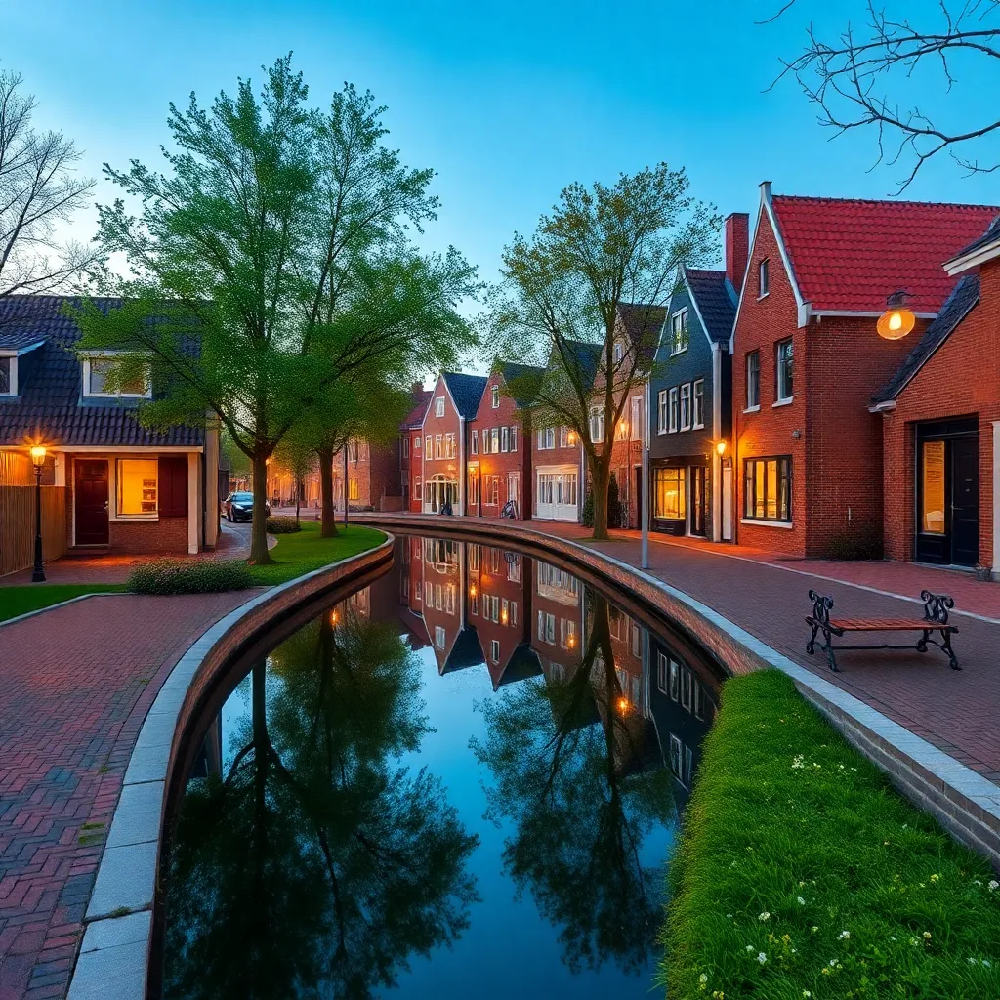

Welkom bij Gemeente Hattenlo
Ontdek alles over onze gemeente, van bezienswaardigheden tot toekomstvisie.
Wist je dat?
Gemeente Hattenlo heeft meer dan 200 jaar geschiedenis en is bekend om zijn prachtige natuur.

Leuk Feitje
De gemeente heeft talloze wandel- en fietspaden door adembenemende landschappen.